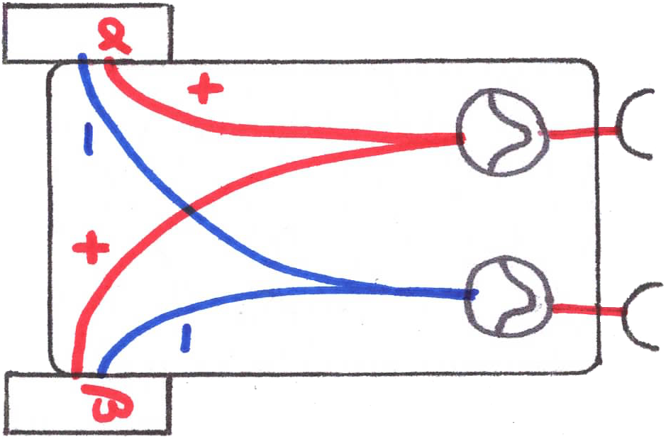
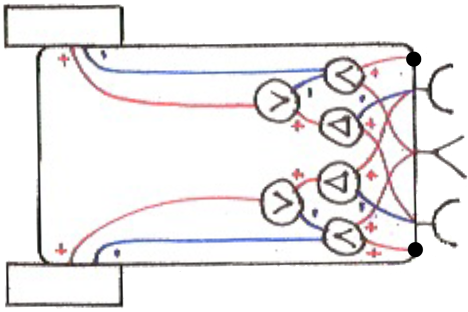

- Braitenberg Vehicle #1: Getting Around
- Braitenberg Vehicle 1 is stimulated by light, making it move faster as it approaches the light source.

- Braitenberg Vehicle #2: Fear and Aggression
- Braitenberg Vehicles 2a and 2b exhibit negative and positive phototaxis, or directed movement away from, or towards a light source.

- Braitenberg Vehicle #3: Love
- Light inhibits the motors, causing Vehicle 3 to slow down and bask in the sunshine that it loves. The more light, the greater the inhibitory effect.

- Braitenberg Vehicle #4: Values and Special Tastes
- Vehicle 4 introduces new internal nodes that represent artificial neurons, analogous to our own brain cells. These have a non-linear activation function that controls how much the output is activated by its inputs.
 - Braitenberg Vehicle #5: Logic
- To make a brain out of artificial neurons we can connect them together whichever way we like.
 - Braitenberg Vehicle #6: Selection, the Impersonal Engineer
- We apply Darwinian selection to vehicles. New vehicles are created by random mutation, and only those that remain in the window are deemed fit to survive.